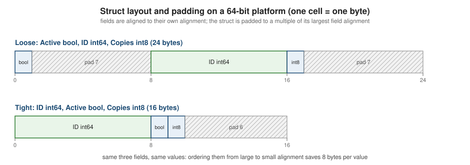

Types and Values
|
This content was generated with the assistance of AI and should be verified against the official documentation before being relied on in production. |
This page is written against Go 1.27 (go1.27.2) and was checked on 2026-10-18. Every program below was compiled with that
toolchain, passes gofmt and go vet, and was run on darwin/arm64; the output is the real output, and the compile
errors and vet messages are the real ones. All programs belong to one scratch module with this go.mod:
module example.com/shelf
go 1.27Go is statically typed and strongly typed in the practical sense: every expression has a type known at compile time,
and Go performs almost no implicit conversions. An int is not a float64, a float64 is not a string, a bool is
not a number, and two named types with the same layout are still different types. Many of Go’s best properties — readable
code, fast compilation, no integer-promotion surprises — follow from that strictness. This page covers the basic types
(booleans, numbers and strings), the literals that create them, how conversions work, and the type-system rules: zero values,
defined types and aliases, type identity, assignability and representability, plus sizes and alignment. Declarations
themselves are on Variables, Constants and iota; operators
are on Operators and Expressions; composite types have their own pages
(Arrays and Slices, Maps,
Structs and Embedding) as do
Interfaces and Generics. The same material for
other languages is on Types & Values in Rust and
Basic Types & Values in C.
The shape of Go’s type system
A type determines the set of values, the operations allowed on them and their memory layout. The spec distinguishes basic types (booleans, numerics, strings) from composite types built from other types, and named from unnamed types.
-
Named types have a name: all predeclared types (
int,string,error), and every type declared withtype. Only named types can have methods. -
Unnamed types (type literals) are described structurally:
[]int,map[string]int,*Book,func(int) bool,struct{ X int }. -
Every type has an underlying type: for a predeclared type it is itself; for a type declaration it is the underlying type of the type named in the declaration; for a type literal it is the literal.
-
A defined type is created by a type declaration and is different from every other type; a type alias gives a second name to an existing type and is identical to it. Both are covered below.
Predeclared identifiers
Go’s universe block contains these identifiers, which are available everywhere without an import:
| Category | Identifiers |
|---|---|
Types |
|
Constants |
|
Zero value |
|
Functions |
|
any and comparable arrived with generics in Go 1.18; min, max and clear in Go 1.21. Note that byte and rune are
aliases (uint8 and int32), any is an alias of the empty interface, and error and comparable are interfaces
(see Interfaces). Stringer is not predeclared; it is fmt.Stringer.
These identifiers are not reserved words. They can be redeclared in an inner scope, which compiles and is a classic source of confusing bugs; a linter or code review should catch it.
package main
import "fmt"
func main() {
fmt.Println(len("abc"))
len := 99 // legal: predeclared identifiers live in the universe block
fmt.Println(len)
true := false // also legal, and a classic review catch
fmt.Println(true)
type string int // shadows the type name in this block
var s string = 7
fmt.Printf("%T %v\n", s, s)
var error = "not an interface any more"
fmt.Println(error)
}3
99
false
main.string 7
not an interface any moreThe 25 keywords (break, func, range, …) are the actually reserved words; they are listed on
Program Structure and Lexical Elements.
📊 Every predeclared type: size, range and zero value
The first table was generated by a Go program using unsafe.Sizeof and the math constants, run on darwin/arm64
(a 64-bit platform); the program is shown below the table. int, uint and uintptr are 32 bits wide on 32-bit platforms
(see Platform-dependent sizes).
| Type | Size (bytes) | Values | Zero value |
|---|---|---|---|
|
1 |
|
|
|
1 |
-128 to 127 |
|
|
2 |
-32768 to 32767 |
|
|
4 |
-2147483648 to 2147483647 |
|
|
8 |
-9223372036854775808 to 9223372036854775807 |
|
|
8 |
-9223372036854775808 to 9223372036854775807 on this platform |
|
|
1 |
0 to 255 |
|
|
2 |
0 to 65535 |
|
|
4 |
0 to 4294967295 |
|
|
8 |
0 to 18446744073709551615 |
|
|
8 |
0 to 18446744073709551615 on this platform |
|
|
8 |
an unsigned integer large enough to hold any pointer bit pattern |
|
|
4 |
about ±3.403e+38 (smallest positive 1.401e-45), 6 to 9 significant digits |
|
|
8 |
about ±1.798e+308 (smallest positive 4.941e-324), 15 to 17 significant digits |
|
|
8 |
two |
|
|
16 |
two |
|
|
16 |
an immutable sequence of bytes (the header is a pointer and a length) |
|
|
16 |
any value with an |
|
|
16 |
any value (an alias for the empty interface) |
|
The composite types that are predeclared only through their syntax have sizes that do not depend on the element type:
| Type | Size (bytes) | Zero value | Notes |
|---|---|---|---|
|
8 |
|
one machine word |
|
24 |
|
pointer, length and capacity |
|
8 |
|
a pointer to the runtime map |
|
8 |
|
a pointer to the runtime channel |
|
8 |
|
a pointer to a function value (code and captured variables) |
|
16 |
|
length times the element size |
|
0 |
|
takes no space |
The program that produced the first table prints these rows directly from the language, so the numbers cannot be wrong about the toolchain they were produced on:
package main
import (
"fmt"
"math"
"unsafe"
)
func main() {
fmt.Println("[cols=\"1,1,3,1\",options=\"header\"]")
fmt.Println("|===")
fmt.Println("| Type | Size (bytes) | Values | Zero value")
row := func(name string, size uintptr, values, zero string) {
fmt.Printf("| `%s` | %d | %s | `%s`\n", name, size, values, zero)
}
row("bool", unsafe.Sizeof(true), "`false`, `true`", "false")
row("int8", unsafe.Sizeof(int8(0)), fmt.Sprintf("%d to %d", math.MinInt8, math.MaxInt8), "0")
row("int16", unsafe.Sizeof(int16(0)), fmt.Sprintf("%d to %d", math.MinInt16, math.MaxInt16), "0")
row("int32 (rune)", unsafe.Sizeof(int32(0)), fmt.Sprintf("%d to %d", math.MinInt32, math.MaxInt32), "0")
row("int64", unsafe.Sizeof(int64(0)), fmt.Sprintf("%d to %d", int64(math.MinInt64), int64(math.MaxInt64)), "0")
row("int", unsafe.Sizeof(int(0)), fmt.Sprintf("%d to %d on this platform", math.MinInt, math.MaxInt), "0")
row("uint8 (byte)", unsafe.Sizeof(uint8(0)), fmt.Sprintf("0 to %d", math.MaxUint8), "0")
row("uint16", unsafe.Sizeof(uint16(0)), fmt.Sprintf("0 to %d", math.MaxUint16), "0")
row("uint32", unsafe.Sizeof(uint32(0)), fmt.Sprintf("0 to %d", math.MaxUint32), "0")
row("uint64", unsafe.Sizeof(uint64(0)), fmt.Sprintf("0 to %d", uint64(math.MaxUint64)), "0")
row("uint", unsafe.Sizeof(uint(0)), fmt.Sprintf("0 to %d on this platform", uint(math.MaxUint)), "0")
row("uintptr", unsafe.Sizeof(uintptr(0)), "an unsigned integer large enough to hold any pointer bit pattern", "0")
row("float32", unsafe.Sizeof(float32(0)),
fmt.Sprintf("about ±%.4g (smallest positive %.4g), 6 to 9 significant digits", math.MaxFloat32, math.SmallestNonzeroFloat32), "0")
row("float64", unsafe.Sizeof(float64(0)),
fmt.Sprintf("about ±%.4g (smallest positive %.4g), 15 to 17 significant digits", math.MaxFloat64, math.SmallestNonzeroFloat64), "0")
row("complex64", unsafe.Sizeof(complex64(0)), "two `float32` parts", "(0+0i)")
row("complex128", unsafe.Sizeof(complex128(0)), "two `float64` parts", "(0+0i)")
row("string", unsafe.Sizeof(""), "an immutable sequence of bytes (the header is a pointer and a length)", `""`)
var e error
var a any
row("error", unsafe.Sizeof(e), "any value with an `Error() string` method (an interface)", "nil")
row("any", unsafe.Sizeof(a), "any value (an alias for the empty interface)", "nil")
fmt.Println("|===")
}Source: unsafe: Sizeof
Source: math: constants
The guaranteed sizes in the spec are: int8, uint8 and byte take 1 byte; int16 and uint16 2; int32, uint32,
float32 and rune 4; int64, uint64, float64 and complex64 8; and complex128 16. int, uint and uintptr are
implementation-specific and at least 32 bits wide. The sizes of string, slices, maps, channels, interfaces and pointers
are not specified by the language; the figures above are those of the gc compiler.
The ranges themselves come from two’s-complement arithmetic: an N-bit signed integer holds -2^(N-1) to 2^(N-1)-1, an
unsigned one 0 to 2^N-1. Print them from the standard library rather than memorising them:
package main
import (
"fmt"
"math"
"math/bits"
"runtime"
"strconv"
)
func main() {
fmt.Println(runtime.GOOS, runtime.GOARCH, strconv.IntSize, bits.UintSize)
fmt.Println(math.MinInt8, math.MaxInt8, math.MaxUint8)
fmt.Println(math.MinInt16, math.MaxInt16, math.MaxUint16)
fmt.Println(math.MinInt32, math.MaxInt32, uint32(math.MaxUint32))
fmt.Println(int64(math.MinInt64), int64(math.MaxInt64), uint64(math.MaxUint64))
fmt.Println(math.MinInt, math.MaxInt, uint(math.MaxUint))
}darwin arm64 64 64
-128 127 255
-32768 32767 65535
-2147483648 2147483647 4294967295
-9223372036854775808 9223372036854775807 18446744073709551615
-9223372036854775808 9223372036854775807 18446744073709551615Source: strconv: IntSize
Platform-dependent sizes
int and uint are the width of a machine word. That is 64 bits on every 64-bit target (and has been since Go 1.1) and 32 bits on
32-bit targets (GOARCH=386 and arm; wasm is 64-bit). uintptr is wide enough to hold a pointer; pointers, string
headers, slice headers and interface values change size with it. Do not assume 32 bits for int: Vivien’s chapter 4 states
the opposite for "as of Go 1.x", which is wrong on any 64-bit machine. The go/types package can report the layout for any
architecture without running code for it:
package main
import (
"fmt"
"go/types"
)
func main() {
archs := []string{"386", "amd64", "arm64"}
named := []struct {
name string
typ types.Type
}{
{"int", types.Typ[types.Int]},
{"uint", types.Typ[types.Uint]},
{"uintptr", types.Typ[types.Uintptr]},
{"int64", types.Typ[types.Int64]},
{"float64", types.Typ[types.Float64]},
{"complex128", types.Typ[types.Complex128]},
{"string", types.Typ[types.String]},
{"[]int", types.NewSlice(types.Typ[types.Int])},
{"*int", types.NewPointer(types.Typ[types.Int])},
{"any", types.NewInterfaceType(nil, nil)},
}
fmt.Printf("%-12s", "type")
for _, a := range archs {
fmt.Printf("%7s", a)
}
fmt.Println()
for _, n := range named {
fmt.Printf("%-12s", n.name)
for _, a := range archs {
fmt.Printf("%7d", types.SizesFor("gc", a).Sizeof(n.typ))
}
fmt.Println()
}
}type 386 amd64 arm64
int 4 8 8
uint 4 8 8
uintptr 4 8 8
int64 8 8 8
float64 8 8 8
complex128 16 16 16
string 8 16 16
[]int 12 24 24
*int 4 8 8
any 8 16 16Source: go/types: SizesFor
The same fact can be checked at compile time on every target by writing code that stops compiling when an assumption
breaks. The array length below is negative when int is smaller than 8 bytes, so the program is accepted on amd64
and arm64 and rejected for a 32-bit GOARCH. Cross-compiling shows the real compiler message (no execution is needed):
package main
import "unsafe"
// Compile-time assertion: the array length is negative, and so the
// program is rejected, whenever int is smaller than 8 bytes.
var _ [unsafe.Sizeof(int(0)) - 8]struct{}
func main() {}# example.com/shelf/ref/err/size-assert
./main.go:7:8: unsafe.Sizeof(int(0)) - 8 (constant -4 of type uintptr) overflows uintptrPortable code uses explicitly sized types (int32, uint64) for file formats, network protocols and hashing, and int for
lengths, indexes and counts. strconv.IntSize and math/bits.UintSize report the width in bits at run time.
Booleans
bool has two values, the predeclared constants true and false, and its zero value is false. Comparisons yield an
untyped boolean value, and && and || short-circuit: the right operand is evaluated only when needed. There is no
truthiness: conditions must be of boolean type, and bool never converts to or from an integer.
package main
import "fmt"
func expensive() bool {
fmt.Println("expensive called")
return true
}
func main() {
var ok bool // false
loaned := true
fmt.Println(ok, loaned, !loaned, ok || loaned, ok && loaned)
fmt.Println(ok && expensive()) // && and || short-circuit: expensive is not called
fmt.Println(loaned || expensive())
fmt.Println(ok == false, loaned != ok)
// bool has no numeric form; convert explicitly
n := 0
if loaned {
n = 1
}
fmt.Println(n)
type Flag bool
var f Flag = true
fmt.Printf("%v %T\n", f, f)
}false true false true false
false
true
true true
1
true main.Flagpackage main
import "fmt"
func main() {
n := 1
if n {
fmt.Println("truthy")
}
for n {
}
var b bool = 1
_ = b
}# example.com/shelf/ref/err/non-bool
./main.go:7:5: non-boolean condition in if statement
./main.go:10:6: non-boolean condition in for statement
./main.go:12:15: cannot use 1 (untyped int constant) as bool value in variable declarationA defined type with underlying type bool (type Flag bool) is a distinct type that prints as main.Flag.
Integers
Go has ten integer types: the signed int8, int16, int32, int64, int and the unsigned uint8, uint16, uint32,
uint64, uint, plus uintptr. Two aliases are used constantly:
-
byteis an alias foruint8: use it for raw data, and wherever a value is bytes. -
runeis an alias forint32: use it for a Unicode code point (see Strings, Runes and UTF-8).
Which one to use:
-
Use
intfor counts, lengths, indexes and loop counters: it is whatlen,cap,rangeand slice indexing use, and it avoids a conversion at every call. -
Use a sized type when the width is part of the specification (a file format, an
int64timestamp, auint32checksum), or when memory layout matters (large arrays, structs sent over the wire). -
Avoid unsigned types for ordinary arithmetic. Subtracting from an unsigned value wraps instead of going negative, which turns
for i := n - 1; i >= 0; i--into an infinite loop andlen(s) - len(t)comparisons into bugs; the standard library usesintfor sizes for that reason. -
uintptrholds the integer value of an address; it is not a pointer, is ignored by the garbage collector, and is mainly forunsafecode (see unsafe and Low-Level Programming).
Overflow wraps silently at run time
Arithmetic on integer variables is modular: the result of an operation that does not fit is truncated to the type’s width. There is no trap, no exception and no flag. A constant expression that overflows is different: it is a compile-time error (see Variables, Constants and iota).
package main
import (
"fmt"
"math"
"math/bits"
)
// addChecked reports whether a+b overflowed int64.
func addChecked(a, b int64) (int64, bool) {
sum := a + b
overflow := (a > 0 && b > 0 && sum < 0) || (a < 0 && b < 0 && sum >= 0)
return sum, overflow
}
func main() {
var i8 int8 = math.MaxInt8
i8++ // wraps silently at run time
fmt.Println(i8)
var u8 uint8 = 0
u8-- // unsigned underflow
fmt.Println(u8)
var m int64 = math.MinInt64
fmt.Println(-m, m/-1) // both wrap; neither panics
n := math.MaxInt64
fmt.Println(n+1 == math.MinInt64)
fmt.Println(addChecked(math.MaxInt64, 1))
sum, carry := bits.Add64(math.MaxUint64, 1, 0)
fmt.Println(sum, carry)
words := []string{}
for i := 0; i < len(words)-1; i++ { // len is int: -1 is fine
fmt.Println("never printed")
}
var count uint = 0
fmt.Println(count-1 > 100) // wraps to a huge number
}-128
255
-9223372036854775808 -9223372036854775808
true
-9223372036854775808 true
0 1
trueSource: math/bits: Add64
Wrapping is guaranteed and well defined (it is how hash functions and counters are written), but it makes silent overflow
an ordinary bug. When it matters, check explicitly: compare against math.MaxInt64 before adding, use the carry and borrow
primitives in math/bits (bits.Add64, bits.Mul64, bits.Sub64), or use math/big. For signed integers
the overflow cases are MinInt negation, MinInt / -1, and ordinary addition and multiplication; these wrap rather than
panic.
Division and remainder
Integer division truncates toward zero, and the remainder has the sign of the dividend, so (a/b)*b + a%b == a always
holds. Dividing an integer by zero at run time panics; a constant zero divisor is a compile error. The % operator is not a
modulus: for a ring-buffer index or a hash bucket use the ((a % n) + n) % n form shown below.
package main
import "fmt"
func main() {
// Integer division truncates toward zero; the remainder takes the sign
// of the dividend, so (a/b)*b + a%b == a.
for _, p := range [][2]int{{7, 2}, {-7, 2}, {7, -2}, {-7, -2}} {
a, b := p[0], p[1]
fmt.Printf("%2d / %2d = %2d %2d %% %2d = %2d\n", a, b, a/b, a, b, a%b)
}
fmt.Println(7.0/2, float64(7)/2, 7/2)
// A non-negative modulus, as needed for ring buffers and hashing.
mod := func(a, n int) int { return ((a % n) + n) % n }
fmt.Println(mod(-1, 5), mod(6, 5))
defer func() { fmt.Println("recovered:", recover()) }()
zero := 0
fmt.Println(1 / zero)
} 7 / 2 = 3 7 % 2 = 1
-7 / 2 = -3 -7 % 2 = -1
7 / -2 = -3 7 % -2 = 1
-7 / -2 = 3 -7 % -2 = -1
3.5 3.5 3
4 1
recovered: runtime error: integer divide by zeroThe / operator is integer division only when both operands are integers; 7.0/2 and float64(7)/2 are floating-point
divisions. Floating-point division by zero is not a panic, as shown below.
Conversions between integer types
Conversions are always explicit (int8(x)), never implicit. Converting to a narrower type keeps the low bits; converting between signed
and unsigned of the same width reinterprets the bit pattern; converting to a wider type sign-extends a signed source and zero-extends an
unsigned one. Converting a float to an integer truncates toward zero.
package main
import "fmt"
func main() {
big := 300
fmt.Println(int8(big), uint8(big), uint16(big)) // narrowing keeps the low bits
neg := -1
fmt.Println(uint8(neg), uint32(neg), uint64(neg)) // sign bit pattern reinterpreted
var b int8 = -5
fmt.Println(int32(b), uint32(b), uint8(b)) // widening sign-extends a signed source
f, g := -2.9, 2.9
fmt.Println(int(f), int(g), int(-g/10)) // float to int truncates toward zero
h := 1 << 24
fmt.Println(float32(h+1), float64(1<<53+1))
}44 44 300
255 4294967295 18446744073709551615
-5 4294967291 251
-2 2 0
1.6777216e+07 9.007199254740992e+15If a floating-point value cannot be represented by the destination type, the conversion still succeeds but the resulting value is implementation-dependent (this is the spec’s wording), so check the range before converting.
Floating-point numbers
float32 and float64 implement IEEE 754 binary32 and binary64. Use float64 by default: it is the default type for
floating-point constants, what the math package takes and returns, and it has 53 bits of precision against 24 for float32.
The values follow the IEEE rules, none of which are surprising once they are known and all of which are surprising when
they are not:
-
decimal fractions are rarely exact:
0.1 + 0.2 != 0.3, because neither 0.1 nor 0.2 is exactly representable in binary (the constant expression0.1+0.2 == 0.3istrue, because constants are exact); -
division by zero gives
+Inf,-InforNaN; it does not panic; -
NaNis not equal to anything, including itself, and every ordered comparison with aNaNisfalse; test withmath.IsNaN; -
there is a negative zero:
-0 == 0, butmath.Signbittells them apart; -
float32cannot represent every integer above2^24.
package main
import (
"fmt"
"math"
)
func main() {
a, b := 0.1, 0.2
fmt.Println(a+b, a+b == 0.3, math.Abs(a+b-0.3) < 1e-9)
fmt.Println(0.1+0.2 == 0.3) // constant arithmetic is exact: true
var zero float64
fmt.Println(1/zero, -1/zero, zero/zero) // +Inf, -Inf, NaN: no panic
nan := math.NaN()
fmt.Println(nan == nan, nan != nan, math.IsNaN(nan), nan < 1, nan > 1)
negZero := math.Copysign(0, -1)
fmt.Println(negZero, negZero == 0, math.Signbit(negZero))
var f32 float32 = 16777216
fmt.Println(f32+1 == f32) // float32 has a 24-bit significand
// Money in floating point drifts; keep minor units in an integer.
total := 0.0
for range 10 {
total += 0.10
}
fmt.Println(total, total == 1.0)
cents := 0
for range 10 {
cents += 10
}
fmt.Printf("%d.%02d\n", cents/100, cents%100)
huge := math.MaxFloat64
fmt.Println(huge*10, -huge*10) // run-time overflow gives infinities
}0.30000000000000004 false true
true
+Inf -Inf NaN
false true true false false
-0 true true
true
0.9999999999999999 false
1.00
+Inf -InfSource: math: IsNaN
Compare floating-point numbers with a tolerance, never with ==; map keys of floating-point type are possible but
dangerous because NaN keys can never be found again. Never use floating-point types for money: keep amounts in minor
units (cents) in an integer type, or use a decimal library; the example sums 0.10 ten times and does not obtain 1.0. The
spec also allows an implementation to fuse operations such as x*y + z into one fused multiply-add, which can change the
last digits of a result across architectures; an explicit conversion such as float64(x*y) + z prevents the fusion.
Useful constants in math: Pi, E, Sqrt2, Phi, Ln2, MaxFloat32, MaxFloat64, SmallestNonzeroFloat32,
SmallestNonzeroFloat64, MaxInt, MinInt and the sized integer limits. They are untyped constants, so math.Pi*r*r adapts to float32 or
float64 operands.
Complex numbers
complex128 (two float64 values) and complex64 (two float32 values) are built in. The builtins complex, real and
imag create and take apart a complex value; arithmetic works with the usual operators; math/cmplx supplies the functions
(Abs, Sqrt, Exp, Pow, Phase, Polar). Complex numbers are rare in application code and common in signal processing and
numeric work.
package main
import (
"fmt"
"math/cmplx"
)
func main() {
var c complex128 = 3 + 4i
d := complex(1, -2) // builtin complex(real, imag)
fmt.Println(c, d, c*d, c+d)
fmt.Println(real(c), imag(c), cmplx.Abs(c))
var c64 complex64 = complex64(c)
fmt.Printf("%T %T %v\n", c, c64, c == 3+4i)
fmt.Printf("%.2f %v\n", cmplx.Sqrt(-1), cmplx.Exp(1i*3.141592653589793))
}(3+4i) (1-2i) (11-2i) (4+2i)
3 4 5
complex128 complex64 true
(0.00+1.00i) (-1+1.2246467991473515e-16i)Source: math/cmplx
Strings
A string is an immutable sequence of bytes (not characters, and not runes). Its zero value is "". A string value is a
read-only header of a pointer and a length (16 bytes on a 64-bit platform), and it is usually, but not necessarily, UTF-8
text. len(s) is the length in bytes, s[i] is a byte (and is not addressable), and s[i:j] takes a substring that shares
storage. Strings compare bytewise with ==, < and the other comparison operators; + concatenates, creating a new
string each time. The string-heavy details (UTF-8, range over runes, strings.Builder, normalisation) are on
Strings, Runes and UTF-8 and
fmt, Strings and Text Processing.
package main
import "fmt"
func main() {
title := "Les Misérables"
fmt.Println(len(title), len([]rune(title))) // bytes versus code points
fmt.Println(title[0], title[4:7], string(title[0]))
var empty string
fmt.Printf("%q %d %t\n", empty, len(empty), empty == "")
fmt.Println("abc" < "abd", "Z" < "a", "é" > "z")
greeting := "Hello, " + "shelf"
greeting += "!"
fmt.Println(greeting)
for i, r := range "é!" {
fmt.Println(i, r, string(r))
}
}15 14
76 Mis L
"" 0 true
true true true
Hello, shelf!
0 233 é
2 33 !Strings are immutable, so an element cannot be assigned:
package main
func main() {
s := "shelf"
s[0] = 'S'
}# example.com/shelf/ref/err/string-assign
./main.go:5:2: cannot assign to s[0] (neither addressable nor a map index expression)Two corrections to common descriptions: a string is not "an array of runes" (it is bytes), and a rune does not "store
UTF-8" — it is a Unicode code point held in an int32, and a code point takes one to four bytes once encoded as UTF-8.
Numeric literals
Literals create untyped constants (see Variables, Constants and iota). The forms are:
| Kind | Forms | Examples |
|---|---|---|
Integer |
decimal; |
|
Floating-point |
decimal with a point and/or exponent ( |
|
Imaginary |
any integer or float literal followed by |
|
Rune |
a single code point in single quotes, with escapes |
|
String |
interpreted: double quotes with escapes; raw: backquotes, no escapes, may span lines |
|
package main
import "fmt"
func main() {
// Integer literals (underscores and the 0b/0o prefixes arrived in Go 1.13).
fmt.Println(42, 0b101010, 0o52, 052, 0x2A, 0x2a, 1_000_000, 0x_FF_FF)
// Floating-point literals, including hexadecimal floats (mantissa, p, binary exponent).
fmt.Println(1.5, .5, 5., 1e3, 1.5e-2, 0x1p-2, 0x1.8p1, 1_0.2_5)
// Imaginary literals: the suffix i multiplies by the imaginary unit.
fmt.Println(2i, 0b11i, 0o7i, 1.5e1i, 0x10i, 12i) // 012i is decimal 12i, for backward compatibility
// Rune literals: a code point as an untyped rune constant.
fmt.Println('a', '\n', '\x41', '\u00e9', '\U0001F4D6', '\101', '\'', '\\')
fmt.Printf("%c %c %U %q\n", 'é', 0x1F4D6, 'é', '\t')
// String literals: interpreted (escapes processed) and raw (backquotes).
interpreted := "Dune\t(1965)\n\"Frank\" \u00e9 \xff"
raw := `C:\shelf\books
line two with \n kept literally`
fmt.Printf("%q\n%q\n", interpreted, raw)
fmt.Println(len(interpreted), len(raw), len("é"), len("📖"))
}42 42 42 42 42 42 1000000 65535
1.5 0.5 5 1000 0.015 0.25 3 10.25
(0+2i) (0+3i) (0+7i) (0+15i) (0+16i) (0+12i)
97 10 65 233 128214 65 39 92
é 📖 U+00E9 '\t'
"Dune\t(1965)\n\"Frank\" é \xff"
"C:\\shelf\\books\nline two with \\n kept literally"
24 46 2 4Points worth knowing:
-
A leading zero still means octal:
052is 42, and08is a compile error. Prefer0o52when you mean octal (file modes:0o644). -
Underscores are only a readability aid and are ignored:
1_000_000,0b_1010_0110,0x_FF_FF. They must separate digits or follow a base prefix. -
An imaginary literal’s value is the same as the number without its
isuffix, for backward compatibility:012iis12i, not octal. -
A rune literal is an untyped rune constant holding a Unicode code point, so
'a'is the number 97 with default typerune. The escapes are\a \b \f \n \r \t \v \\ \',\xHH(a byte),\uHHHH,\UHHHHHHHHand octal\NNN;\"is only valid inside strings. -
In an interpreted string,
\xffinserts a single raw byte, which can make the string invalid UTF-8;\u00e9inserts the UTF-8 encoding of the code point. Inside a raw string, carriage returns are discarded, nothing else is interpreted, and a backquote cannot appear. -
Invalid literals are reported by the compiler:
package main
import "fmt"
func main() {
fmt.Println(08)
fmt.Println(1__0)
fmt.Println(0x)
fmt.Println('ab')
fmt.Println(0b102)
}# example.com/shelf/ref/err/bad-literals
./main.go:6:15: invalid digit '8' in octal literal
./main.go:7:16: '_' must separate successive digits
./main.go:8:16: hexadecimal literal has no digits
./main.go:9:14: more than one character in rune literal
./main.go:10:18: invalid digit '2' in binary literalThe prefixes 0b and 0o, digit separators and hexadecimal floating-point literals arrived in Go 1.13. Older books do not
mention them (see Where the books are outdated).
Conversions
A conversion T(x) produces a value of type T. Go has no implicit numeric conversions: mixing int32 and int64, or int
and float64, in one expression or assignment is a compile error, and the fix is always an explicit conversion. This costs a
little typing and removes the "usual arithmetic conversions" family of C bugs.
package main
import "fmt"
func main() {
var a int32 = 1
var b int64 = 2
var c int = 3
var x float64 = c
fmt.Println(a+b, x)
fmt.Println(a == c)
}# example.com/shelf/ref/err/no-implicit
./main.go:9:18: cannot use c (variable of type int) as float64 value in variable declaration
./main.go:10:14: invalid operation: a + b (mismatched types int32 and int64)
./main.go:11:19: invalid operation: a == c (mismatched types int32 and int)The permitted conversions from a non-constant x to T are:
-
xis assignable toT; -
the type of
xandThave identical underlying types (ignoring struct tags), or are both unnamed pointer types whose base types have identical underlying types; -
both are integer or floating-point types (numeric conversion), or both are complex;
-
xis an integer or a slice of bytes or runes andTis a string type; orxis a string andTis a slice of bytes or runes; -
xis a slice andTis an array or a pointer to an array (Go 1.17 and 1.20).
A constant conversion must be representable: int8(200), uint(-1) and int(1.5) are compile errors, and a conversion
of an untyped constant yields a typed constant.
package main
import "fmt"
func main() {
fmt.Println(int8(200))
fmt.Println(uint(-1))
fmt.Println(int(1.5))
var f = 1.5
fmt.Println(int(f), uint8(f))
}# example.com/shelf/ref/err/const-conv
./main.go:6:19: constant 200 overflows int8
./main.go:7:19: constant -1 overflows uint
./main.go:8:18: cannot convert 1.5 (untyped float constant) to type intThe three constant cases fail at compile time, while the same conversions on variables (int(f), uint8(f) for f := 1.5)
compile and truncate. Representable constants convert without error, and floating-point constants may be rounded:
package main
import (
"fmt"
"math"
)
func main() {
fmt.Println(uint8(255), int8(-128), int(3.0), float32(0.1), float64(float32(0.1)))
fmt.Println(float32(1e38), int64(math.MaxInt64), uint64(math.MaxUint64))
var x float32 = 16777217 // rounded: float constants only need to round, not be exact
fmt.Println(x)
fmt.Println(complex64(1+2i), float64('a'), string(rune('a'+1)))
}255 -128 3 0.1 0.10000000149011612
1e+38 9223372036854775807 18446744073709551615
1.6777216e+07
(1+2i) 97 bConverting to and from strings
-
string(r)whereris a rune (or any integer) yields the UTF-8 encoding of that code point. It does not produce digits. For the decimal text of a number usestrconv.Itoa(orfmt.Sprint); to parse usestrconv.Atoi,strconv.ParseIntand the related functions. -
string(bs)for a[]byteand[]byte(s)copy the data.[]rune(s)decodes UTF-8 into code points andstring(rs)encodes them back; invalid UTF-8 and invalid code points becomeU+FFFD. -
string(n)for an integer variablencompiles, but it is almost never what the author intended. Since Go 1.15go vetreports it (thestringintconvanalyzer), andgo testruns this check by default.
package main
import (
"fmt"
"strconv"
)
func main() {
n := 65
fmt.Println(string(rune(n))) // the character with code point 65
fmt.Println(strconv.Itoa(n)) // the decimal digits "65"
fmt.Println(fmt.Sprint(n)) // also the digits
fmt.Println(string([]byte{72, 105})) // bytes to string copies
fmt.Println([]byte("hé"), []rune("hé"))
v, err := strconv.ParseInt("ff", 16, 64)
fmt.Println(v, err)
_, err = strconv.Atoi("12a")
fmt.Println(err)
fmt.Println(string(rune(0x110000)), string(rune(-1)) == "\uFFFD")
r, size := []rune("é")[0], len("é")
fmt.Println(r, size)
}A
65
65
Hi
[104 195 169] [104 233]
255 <nil>
strconv.Atoi: parsing "12a": invalid syntax
� true
233 2Source: strconv
package main
import "fmt"
func main() {
n := 65
s := string(n) // compiles, but is almost never what you want
fmt.Println(s)
}main.go:7:7: conversion from int to string yields a string of one rune, not a string of digitsSource: Go 1.15 Release Notes: vet
The vet check is a report, not a compile error — a point on which Bodner’s chapter 3 is imprecise, saying it blocks the
conversion; the program above builds and runs, and it is vet (and therefore go test) that complains. Write
string(rune(n)) when you do mean a code point, to make the intent explicit and silence the check.
Slices to arrays
A slice converts to an array (a copy, Go 1.20) or to an array pointer (shares memory, Go 1.17). The conversion panics at run time if the slice is shorter than the array.
package main
import "fmt"
func main() {
s := []byte("shelf-catalogue")
a := [5]byte(s) // Go 1.20: slice to array, copies; panics if len(s) < 5
p := (*[5]byte)(s) // Go 1.17: slice to array pointer, shares memory
p[0] = 'S'
fmt.Println(string(a[:]), string(s[:5]), len(a), cap(s) >= 15)
defer func() { fmt.Println("recovered:", recover()) }()
short := []byte("abc")
_ = [5]byte(short)
}shelf Shelf 5 true
recovered: runtime error: cannot convert slice with length 3 to array or pointer to array with length 5Zero values
Every variable is set to its type’s zero value when created, so there are no uninitialized values and no "null" reference except
the explicit nil.
| Type | Zero value |
|---|---|
|
|
integers, floats, complex |
|
|
|
pointer, function, channel, map, slice, interface (including |
|
array |
every element is its zero value ( |
struct |
every field is its zero value |
|
usable as they are: an unlocked mutex, an empty buffer, the zero time |
The following program prints the zero value of each kind with %#v, which shows the Go-syntax form including nil-ness:
package main
import (
"fmt"
"sync"
"time"
)
type Author struct{ Name string }
type Book struct {
Title string
Authors []Author
Year int
Rating *float64
Tags map[string]bool
}
func main() {
var (
b bool
i int
f float64
c complex128
s string
p *int
sl []int
m map[string]int
ch chan int
fn func()
e error
a any
arr [3]bool
bk Book
mu sync.Mutex
t time.Time
d time.Duration
)
fmt.Printf("%#v %#v %#v %#v %#v\n", b, i, f, c, s)
fmt.Printf("%#v %#v %#v %#v\n", p, sl, m, ch)
fmt.Printf("%v %v %v %#v\n", fn == nil, e, a, arr)
fmt.Printf("%#v\n", bk)
fmt.Println(t.IsZero(), d, mu.TryLock()) // a zero Mutex is an unlocked mutex
fmt.Println(len(sl), cap(sl), len(m), m["missing"], sl == nil)
sl = append(sl, 1) // append works on a nil slice
fmt.Println(sl)
}false 0 0 (0+0i) ""
(*int)(nil) []int(nil) map[string]int(nil) (chan int)(nil)
true <nil> <nil> [3]bool{false, false, false}
main.Book{Title:"", Authors:[]main.Author(nil), Year:0, Rating:(*float64)(nil), Tags:map[string]bool(nil)}
true 0s true
0 0 0 0 true
[1]Two details follow from the output. A nil slice and an empty slice both have length 0 and both work with append and
range, but they differ in == nil and when encoded as JSON (null against []); a nil map can be read but not
written. The language leaves it to library authors to make the zero value useful, and the standard library does:
var mu sync.Mutex, var buf bytes.Buffer and var wg sync.WaitGroup need no constructor.
Defined types and aliases
A type declaration has two forms, which look almost identical and behave very differently:
| Form | Name | Meaning |
|---|---|---|
|
defined type (a "new type") |
a new, distinct type with the same underlying type; it has no methods of the original; it can have methods of its own |
|
alias declaration |
another name for |
A defined type is different from its underlying type even though they share a representation: ISBN and string are not
interchangeable, which lets the compiler keep an ISBN from being confused with an arbitrary string, or Celsius from Fahrenheit.
An untyped constant converts silently (var i ISBN = "9780441172719"), while a typed string variable needs ISBN(s).
package main
import "fmt"
type ISBN string // defined type: a new, distinct type
type Barcode = ISBN // alias: another name for the same type
type Octets = []byte // alias of an unnamed type
type Set[T comparable] = map[T]struct{} // generic alias (Go 1.24)
func (i ISBN) Valid() bool { return len(i) == 13 }
type Celsius float64
type Fahrenheit float64
func main() {
var b byte = 'x'
var r rune = 'é'
fmt.Printf("%T %T\n", b, r) // byte and rune are aliases of uint8 and int32
var i ISBN = "9780441172719" // an untyped constant converts implicitly
var bc Barcode = i // identical types: no conversion
fmt.Printf("%T %T %v\n", i, bc, bc.Valid())
s := string(i) // explicit conversion: same underlying type
j := ISBN(s)
fmt.Println(s == string(j))
var o Octets = []byte("hi")
fmt.Printf("%T\n", o)
seen := Set[string]{"a": {}}
fmt.Printf("%T %d\n", seen, len(seen))
c := Celsius(100)
f := Fahrenheit(c*9/5 + 32)
fmt.Println(c, f)
}uint8 int32
main.ISBN main.ISBN true
true
[]uint8
map[string]struct {} 1
100 212Source: A Tour of Go: Type conversions
byte and rune are aliases, which is why %T prints uint8 and int32. Aliases exist to move types between packages
while keeping a stable name (the 1.9 release introduced them for gradual refactoring across modules, see
The Go Blog: What’s in an (alias) name?); they are not for creating distinct types. Since Go 1.24 an alias may have type parameters
(type Set[T comparable] = map[T]struct{}), shown in the last lines of the program.
The compiler enforces the distinction:
package main
import "fmt"
type ISBN string
type Celsius float64
type Fahrenheit float64
func main() {
s := "9780441172719"
var i ISBN = s
var c Celsius = 20
var f Fahrenheit = 68
fmt.Println(i, c+f)
}# example.com/shelf/ref/err/defined-mismatch
./main.go:11:15: cannot use s (variable of type string) as ISBN value in variable declaration
./main.go:14:17: invalid operation: c + f (mismatched types Celsius and Fahrenheit)Methods can only be declared on defined types of the same package, which excludes predeclared types:
package main
func (b byte) IsDigit() bool { return b >= '0' && b <= '9' }
func main() {}# example.com/shelf/ref/err/methods-on-builtin
./main.go:3:9: cannot define new methods on non-local type byteThe time.Duration pitfall
time.Duration is a defined type over int64 that counts nanoseconds. Multiplying an int variable by a Duration
constant is a type error, and the fix is to convert the count, not the duration:
package main
import (
"fmt"
"time"
)
func main() {
timeout := 30
d := timeout * time.Second
fmt.Println(d)
}# example.com/shelf/ref/err/duration-mismatch
./main.go:10:7: invalid operation: timeout * time.Second (mismatched types int and time.Duration)package main
import (
"fmt"
"time"
)
func main() {
timeout := 30
d := time.Duration(timeout) * time.Second // convert the count, then multiply
fmt.Println(d, d.Seconds(), int64(d))
const ten = 10
fmt.Println(ten*time.Millisecond, 2.5*float64(time.Second) == 2.5e9)
fmt.Println(time.Duration(1.5 * float64(time.Second)))
}30s 30 30000000000
10ms true
1.5sSource: time: Duration
The untyped constant 10 multiplies directly (ten*time.Millisecond), but timeout * time.Second for a variable does not
compile, which is the type system doing its job: it stops you from treating a plain number as a duration of unknown unit.
See Time and Timers.
Underlying types
The underlying type of a type is found by following the declaration chain: that of ISBN is string; Barcode declared as
type Barcode ISBN also has underlying type string, not ISBN. It decides which conversions are allowed and which
operators work (an ISBN supports + and < because string does). The reflect package reports the kind (the underlying
category) and whether a type has a name:
package main
import (
"fmt"
"reflect"
)
type ISBN string
type Barcode ISBN // underlying type is string, not ISBN
type Shelf []Book
type Book struct{ Title string }
func main() {
for _, v := range []any{ISBN(""), Barcode(""), Shelf(nil), Book{}, 3, (*int)(nil)} {
t := reflect.TypeOf(v)
fmt.Printf("%-14v kind=%-7v named=%v\n", t, t.Kind(), t.Name() != "")
}
fmt.Println(ISBN("a") == ISBN(Barcode("a")))
}main.ISBN kind=string named=true
main.Barcode kind=string named=true
main.Shelf kind=slice named=true
main.Book kind=struct named=true
int kind=int named=true
*int kind=ptr named=false
trueSource: reflect: Type
Type identity, assignability and representability
Three spec rules determine most of the "cannot use x as y" compile errors.
Type identity. A named type (a defined type or a predeclared type) is identical only to itself. Two unnamed types are identical when their literal structure matches: same element types, same field names, types and tags and order, same function parameter and result types and variadic-ness (parameter names do not matter), same channel element type and direction. An alias is identical to the type it names.
package main
import "fmt"
type Point struct{ X, Y int }
type Pair struct{ X, Y int }
type Alias = Point
func main() {
var p Point = Point{1, 2}
var q Pair = Pair(p) // convertible: identical underlying struct types
var al Alias = p // identical: Alias is Point
fmt.Printf("%T %T %T\n", p, q, al)
var s1 []int
var s2 []int
fmt.Println(fmt.Sprintf("%T", s1) == fmt.Sprintf("%T", s2)) // []int is one type everywhere
// Anonymous struct types are identical when fields, tags and order match.
x := struct{ X, Y int }{1, 2}
p = x // assignable: identical underlying types and x's type is unnamed
fmt.Println(p)
fn1 := func(a int, b string) error { return nil }
var fn2 func(int, string) error = fn1 // parameter names do not matter
fmt.Printf("%T %v\n", fn2, fn2 != nil)
}main.Point main.Pair main.Point
true
{1 2}
func(int, string) error trueAssignability. A value x of type V is assignable to a variable of type T if any of these holds:
-
VandTare identical; -
VandThave identical underlying types, are not type parameters, and at least one of them is not a named type; -
Tis an interface type (not a type parameter) andximplementsT; -
xis a bidirectional channel value,Tis a channel type, the element types are identical, and at least one ofVorTis not a named type; -
xis the predeclarednilandTis a pointer, function, slice, map, channel or interface type; -
xis an untyped constant representable by a value of typeT.
package main
import (
"fmt"
"io"
"strings"
)
type IDs []int
type Meters float64
func main() {
// 1. identical types
var a int = 1
var b int = a
// 2. identical underlying types, and at least one of them is not a named type
var ids IDs = []int{1, 2, 3}
var raw []int = ids
// 3. a value that implements an interface
var r io.Reader = strings.NewReader("x")
// 4. a bidirectional channel to a directional channel type
ch := make(chan int, 1)
var send chan<- int = ch
// 5. nil to pointer, function, slice, map, channel and interface types
var p *int = nil
var m map[string]int = nil
// 6. an untyped constant representable in the target type
var d Meters = 3 // untyped 3 becomes Meters
var u uint8 = 'x'
send <- 1
fmt.Println(b, raw, r != nil, <-ch, p, m, d, u)
fmt.Printf("%T %T\n", ids, raw)
}1 [1 2 3] true 1 <nil> map[] 3 120
main.IDs []intThe rules explain the earlier errors: IDs and Handles are both named, so neither is assignable to the other even though
both are []int underneath; a []int is assignable to IDs because one side is unnamed; a receive-only channel is not assignable to a
bidirectional one.
package main
type IDs []int
type Handles []int
type Shelf interface{ Len() int }
func main() {
var a IDs = IDs{1}
var b Handles = a
var s Shelf = a
ch := make(<-chan int)
var back chan int = ch
_, _, _ = b, s, back
}# example.com/shelf/ref/err/assign-fail
./main.go:10:18: cannot use a (variable of slice type IDs) as Handles value in variable declaration
./main.go:11:16: cannot use a (variable of slice type IDs) as Shelf value in variable declaration: IDs does not implement Shelf (missing method Len)
./main.go:13:22: cannot use ch (variable of type <-chan int) as chan int value in variable declarationpackage main
func main() {
x := nil
var n int = nil
_, _ = x, n
}# example.com/shelf/ref/err/nil-untyped
./main.go:4:7: use of untyped nil in assignment
./main.go:5:14: cannot use nil as int value in variable declarationRepresentability. A constant x is representable by a value of type T if x is in the set of values of type T (for integers,
within the range; for floating-point, within range after rounding to the precision of T, with x rounded rather than required
to be exact; for complex, both parts). It is the rule behind var b byte = 300 (error) against var f float32 = 16777217 (accepted and rounded),
used with typed and untyped constants alike. The properties of types and values are collected in
the spec section of that name.
Sizes and alignment
Every type has a size (unsafe.Sizeof) and an alignment (unsafe.Alignof): the address of a value is a multiple of
its alignment, and a struct’s fields are laid out in declaration order with padding inserted to satisfy each field’s
alignment. A struct’s alignment is the largest alignment of its fields, and its size is rounded up to a multiple of that.
unsafe.Offsetof(x.f) gives a field’s byte offset. The results of all three are constants of type uintptr
when the operand’s size does not depend on a type parameter, which means they can size an array.
package main
import (
"fmt"
"unsafe"
)
type Loose struct {
Active bool // 1 byte, then 7 bytes of padding
ID int64 // 8
Copies int8 // 1, then 7 bytes of tail padding
}
type Tight struct {
ID int64 // 8
Active bool // 1
Copies int8 // 1, then 6 bytes of tail padding
}
func main() {
var l Loose
var t Tight
fmt.Println(unsafe.Sizeof(l), unsafe.Alignof(l), unsafe.Sizeof(t), unsafe.Alignof(t))
fmt.Println(unsafe.Offsetof(l.Active), unsafe.Offsetof(l.ID), unsafe.Offsetof(l.Copies))
fmt.Println(unsafe.Offsetof(t.ID), unsafe.Offsetof(t.Active), unsafe.Offsetof(t.Copies))
fmt.Println(unsafe.Sizeof(struct{}{}), unsafe.Sizeof([0]int{}), unsafe.Sizeof([3]int16{}))
fmt.Println(unsafe.Alignof(int8(0)), unsafe.Alignof(int32(0)), unsafe.Alignof(int64(0)), unsafe.Alignof(""), unsafe.Alignof(complex128(0)))
const size = unsafe.Sizeof(l) // a compile-time constant of type uintptr
var buf [size]byte
fmt.Println(len(buf))
}24 8 16 8
0 8 16
0 8 9
0 0 6
1 4 8 8 8
24
Ordering fields from the largest to the smallest alignment shrinks the struct, which matters for large slices of structs and
for cache behaviour. The fieldalignment analyzer (golang.org/x/tools) reports structs whose size could be reduced; it is not
in go vet by default. A zero-size type (struct{}, [0]int) occupies no space, which is why map[K]struct{} is the idiom
for a set, and two distinct zero-size variables may share an address. Alignment rules for unsafe pointer arithmetic, structs.HostLayout and cgo
are on unsafe and Low-Level Programming;
memory placement and escape analysis are on
Memory Management and Garbage Collection.
fmt verbs for inspecting types and values
| Verb | Prints | Example |
|---|---|---|
|
the type |
|
|
the value in default format |
|
|
structs with field names |
|
|
Go-syntax representation |
|
|
integer in decimal, binary, octal, hex |
|
|
floating-point: exponent, fixed, shortest |
|
|
quoted string or rune |
|
|
rune as a character, as |
|
|
boolean |
|
Source: fmt
Comparison with other languages
| Topic | Go | Rust | C | Java |
|---|---|---|---|---|
default integer |
|
|
|
|
integer overflow |
wraps (defined) |
panics in debug, wraps in release |
undefined for signed |
wraps |
implicit numeric conversion |
none |
none |
many |
widening only |
byte / character |
|
|
|
|
string |
immutable bytes, usually UTF-8 |
|
|
immutable UTF-16 |
boolean from integer |
never |
never |
any non-zero |
never |
new distinct type |
|
newtype struct |
|
class or record |
alias |
|
|
|
none |
Where the books are outdated
-
Vivien, chapter 4 introduces the numeric types with
unsafe.Sizeofand states thatintanduintare 32 bits "as of Go 1.x". On every 64-bit platform they are 64 bits (since Go 1.1); the size is implementation-specific, as the table and thesizes-by-archprogram above show. The chapter’s description of a rune as storing UTF-8 is also wrong: a rune is a code point. The chapter predates binary and octal prefixes, digit separators and hexadecimal float literals (Go 1.13) and the generic alias (Go 1.24). -
Vivien, chapter 2 claims all Go types can be tested for equality (slices, maps and functions cannot, except against
nil; see Operators and Expressions) and, as noted on the variables page, that untyped constants are stored without loss of precision. -
Bodner, chapter 2 covers literals, integer types, floats, explicit conversion and
varagainst:=correctly. Additions since:min/max(1.21),new(expr)(1.26), per-iteration loop variables, andmath.MaxIntand friends (1.17). -
Bodner, chapter 3 says
go vetblocks thestring(int)conversion. It is a vet report, not a compile error, as shown above. -
Both books predate type aliases for generic types and
any(Go 1.18); Vivien (chapter 1) calls the empty interface "generic" and Bodner (chapter 15) shows the draft generics design that was never released.
Version notes
| Release | Change |
|---|---|
Go 1.1 |
|
Go 1.9 |
type aliases ( |
Go 1.13 |
|
Go 1.15 |
|
Go 1.17 |
slice to array pointer conversion; |
Go 1.18 |
|
Go 1.20 |
slice to array conversion |
Go 1.21 |
|
Go 1.24 |
generic type aliases |
Go 1.26 |
|
Go 1.27 |
no changes to the basic types; struct literal keys may name promoted fields |
Source: Go 1.18 Release Notes
Source: Go 1.21 Release Notes
Source: Go 1.24 Release Notes